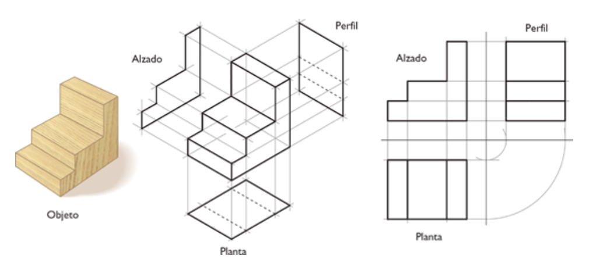
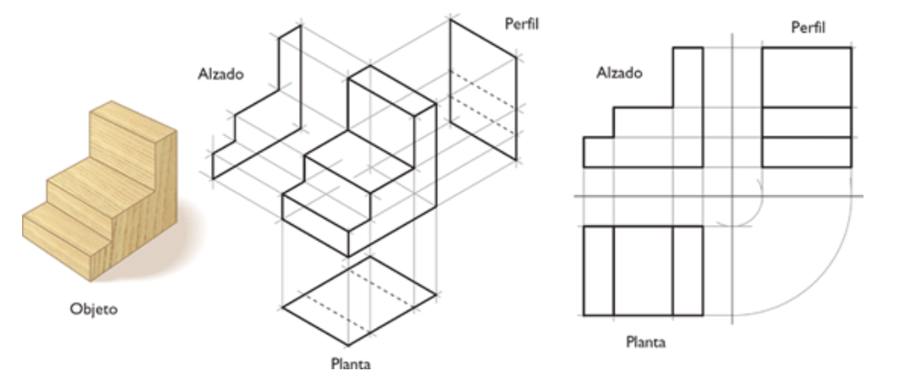
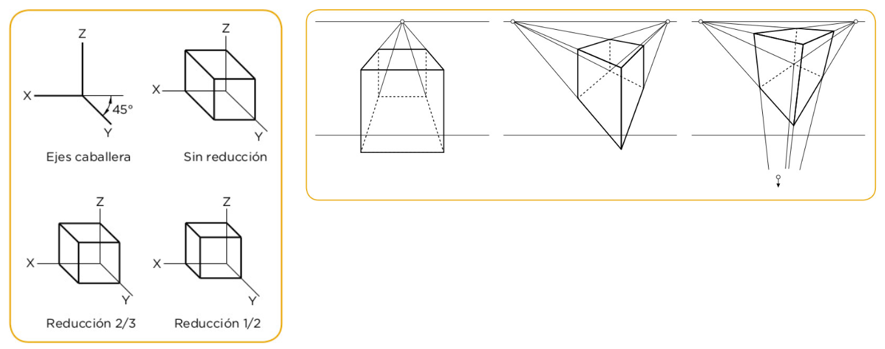
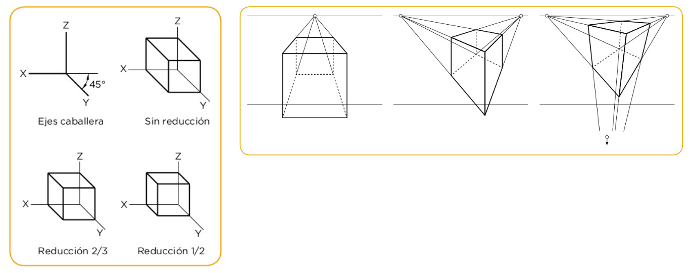
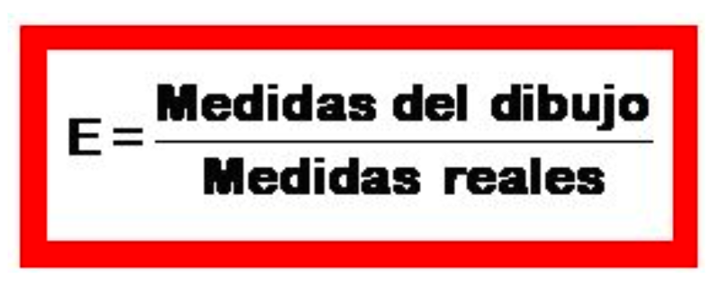
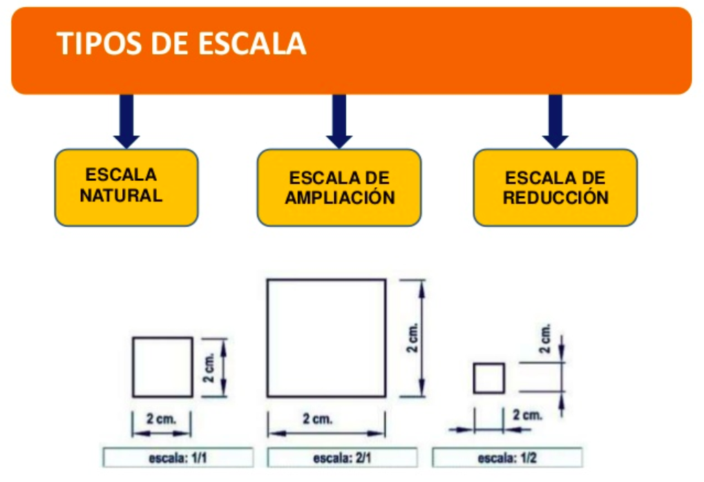
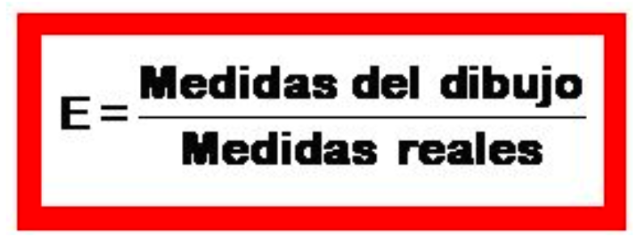
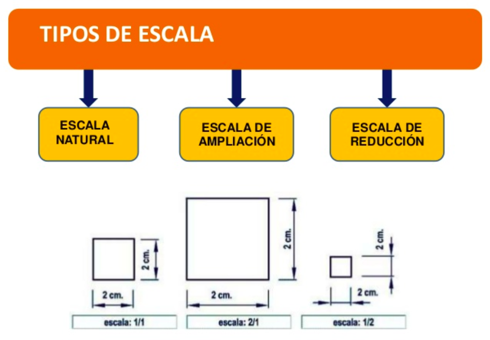
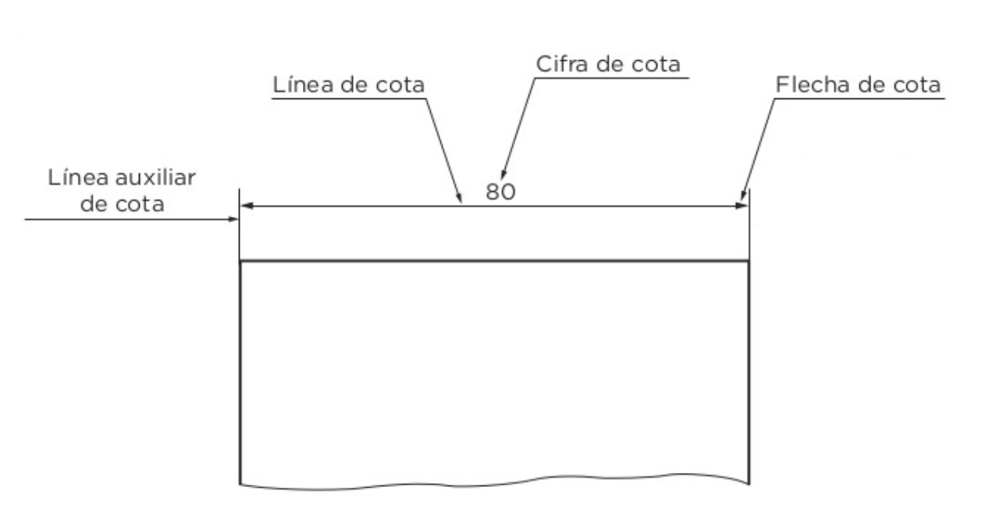

Las personas tenemos una necesidad innata de comunicarnos. Mucho antes de que apareciese el lenguaje escrito ya dibujábamos. El dibujo cubre esa necesidad humana de expresión y transmisión de ideas y sentimientos.
Se distinguen dos tipos: el dibujo artístico, libre y sin restricciones, que juega con las texturas, los colores y una amplia diversidad de técnicas plásticas; y el dibujo técnico, que se desarrolló para disponer de un lenguaje universal de comunicación de ideas que permitiese a técnicos y científicos transmitir sus conocimientos para la construcción de objetos.
En la práctica, la distinción no es tan rígida. Los artistas necesitan dominar las técnicas de dibujo técnico, pues las emplean en muchas de sus obras. Por otra parte, ingenieros, arquitectos y científicos también pueden aplicar técnicas artísticas en la presentación final de sus obras para dotarlas de mayor expresividad.
En Tecnología es muy común el uso de dibujos técnicos para la realización de bocetos y planos. Se trata de dibujos claros y concisos, sin adornos ni colores, ya que no puede haber dudas sobre la forma y dimensiones del objeto que se representa.
En esta unidad nos centraremos en el dibujo técnico.
Lectura facilitada
El dibujo técnico es una forma de comunicación que utilizan los expertos en tecnología, como ingenieros y arquitectos, para transmitir sus ideas y conocimientos. Es un dibujo preciso y detallado, que no utiliza colores ni adornos, para asegurarse de que no haya confusiones sobre la forma y tamaño de los objetos representados.
Aunque habitualmente se distingue entre dibujo artístico y dibujo técnico, en la práctica ambos se entrelazan. Los artistas también emplean técnicas de dibujo técnico en sus obras, y los expertos en tecnología pueden utilizar técnicas artísticas para dar mayor expresividad a sus presentaciones.
En esta unidad nos enfocaremos en el dibujo técnico, aprendiendo las técnicas y conceptos que nos permitirán comunicar nuestras ideas de manera clara y precisa.
2. Las Vistas
En dibujo técnico, se dibujan objetos para ser construidos posteriormente, se suelen emplear las vistas para representar un objeto tridimensional de manera fácil.
Las vistas son representaciones ortogonales (perpendiculares) de un objeto tridimensional. Cada objeto tridimensional tiene seis vistas distintas, pero en tecnología se suelen dibujar solo tres, ya que con estas es suficiente para representar la mayoría de los objetos (Algunas veces solo se necesitan dos vistas).
Las vistas se denominan:
Alzado: Es la vista frontal del objeto. Se elige aquella que proporciona la mayor cantidad de información posible.
Perfil: Es la vista lateral izquierda del objeto. Se dibuja a la derecha del Alzado.
Planta: Es la vista superior. Se dibuja debajo del Alzado.
Para representar piezas mediante un sistema, las vistas siempre se dibujan en el mismo orden y posición. Un detalle importante a tener en cuenta es la coincidencia de dimensiones:
La anchura de la planta y del alzado es la misma
La altura del alzado y de ambos perfiles debe coincidir
La profundidad de la planta y del perfil es igual
También es imprescindible orientar correctamente la planta con respecto al alzado y al perfil para que el resultado tenga sentido. Prolongar horizontal y verticalmente las aristas nos ayudará a hacerlo.
Un error muy frecuente en los principiantes es no orientar bien la planta con respecto al alzado y dibujarla girada.

Lectura facilitada
En dibujo técnico, se dibujan objetos para construirlos después. Se usan vistas para mostrar cómo se ve un objeto tridimensional de manera fácil.
Las vistas son dibujos que muestran un objeto desde diferentes ángulos. Cada objeto tridimensional tiene seis vistas diferentes, pero en tecnología generalmente se dibujan solo tres, porque con esas son suficientes para mostrar la mayoría de los objetos (a veces solo se necesitan dos vistas).
Las vistas se llaman:
Alzado: Es la vista de frente del objeto. Se elige la que muestra más información.
Perfil: Es la vista del lado izquierdo del objeto. Se dibuja a la derecha del Alzado.
Planta: Es la vista de arriba. Se dibuja debajo del Alzado.
Cuando representamos piezas usando este sistema, las vistas siempre se dibujan en el mismo orden y posición. Es importante que las medidas coincidan:
La anchura de la Planta y del Alzado es la misma.
La altura del Alzado y de los Perfiles debe ser igual.
La profundidad de la Planta y del Perfil también debe ser igual.
También es importante que la Planta esté orientada correctamente con respecto al Alzado y al Perfil. Extender las líneas horizontales y verticales nos ayuda a hacerlo.
Un error común en los principiantes es no orientar correctamente la Planta y dibujarla girada.

3. Las Perspectivas
La perspectiva es la técnica que permite crear la sensación de espacio cuando se dibuja sobre una superficie plana. Para ayudarnos a dibujar en perspectiva es habitual trazar unos ejes de referencia o utilizar una plantilla. Tanto las plantillas como la orientación de los ejes son distintas dependiendo del tipo de perspectiva.
Para dibujar en perspectiva isométrica se trazan los tres ejes de referencia formando entre sí ángulos de 120°. También se puede emplear una plantilla formada por triángulos equiláteros para facilitar la representación de piezas.
Aunque al dibujar en perspectiva isométrica es habitual no usar ningún coeficiente de reducción y mantener las proporciones en los tres ejes, la norma indica que se aplique al dibujo isométrico un coeficiente de reducción de 0,82 a todos ellos. De esa manera, se mantiene la apariencia respecto al objeto real aunque el dibujo resultante sea un poco mayor.
La perspectiva caballera muestra el alzado de la figura en verdadera magnitud, mientras que las imágenes correspondientes a planta y perfil sufren una ligera deformación para dar la sensación de profundidad.
Para dibujar en perspectiva caballera se trazan dos ejes perpendiculares (y, z) y el tercero (x) inclinado entre 120° y 150° con respecto a los otros dos. Lo más habitual es que el tercer eje, x, esté inclinado 135° con respecto a y, z, si lo proyectamos hacia delante. También se puede emplear una plantilla cuadriculada para dibujar.
Para que la figura resulte realista, hay que aplicar un coeficiente de reducción a los planos proyectados sobre el eje inclinado. El coeficiente más cómodo de emplear es ½, aunque también es frecuente emplear ⅔, o √2⁄2.
El modo de dibujar en caballera es el siguiente:
Dibujar el alzado en verdadera magnitud. Si se emplea la plantilla cuadriculada, a cada unidad de medida de la figura real debe corresponder un cuadrado de la plantilla (si no usamos una escala diferente).
Para trazar las líneas paralelas al eje inclinado, se aplica la escala de reducción √2⁄2 que se corresponde con la diagonal de cada cuadrado.
Si se trazan los ejes sobre una hoja en blanco, es más sencillo emplear el coeficiente de reducción ½.
Como se puede ver en el ejemplo, la aplicación de distintos coeficientes de reducción modifica el aspecto final del objeto.
Existen otras proyecciones, pero la que más se aproxima a la percepción visual que tenemos las personas de los objetos es la perspectiva cónica. También es la más complicada de dibujar. Aquí vamos a conocer los tipos de perspectivas cónicas que hay, ya que es muy empleada en arte, arquitectura y en simulaciones por ordenador de espacios fotorrealísticos.
Dependiendo de la posición de la persona respecto al objeto observado, se distinguen tres tipos de perspectiva cónica:
Perspectiva frontal. El punto de vista está situado frente al objeto. Las caras de los objetos están paralelas al plano de proyección. Tienen un punto de fuga situado sobre la línea del horizonte. Perspectiva oblicua de dos puntos. El plano del cuadro o de proyección no es paralelo a las caras principales del objeto. Aparecen dos puntos de fuga. Perspectiva aérea. El punto de vista está situado de forma que la línea del horizonte está muy alta o muy baja con respecto a su posición. Se precisa un tercer punto de fuga que se sitúa en una línea perpendicular a la de horizonte.

Lectura facilitada
La perspectiva es una técnica para crear la sensación de espacio en un dibujo plano. Para ayudarnos a dibujar en perspectiva, usamos ejes de referencia o plantillas. La perspectiva isométrica utiliza tres ejes formando ángulos de 120°. Se puede usar una plantilla de triángulos equiláteros para facilitar el dibujo. La norma indica aplicar un coeficiente de reducción de 0,82 al dibujo isométrico para mantener la apariencia del objeto real.
La perspectiva caballera muestra la figura en verdadera magnitud en el alzado, mientras que la planta y el perfil se deforman ligeramente para dar sensación de profundidad. Para dibujar en perspectiva caballera, se trazan dos ejes perpendiculares y un tercero inclinado entre 120° y 150°. El tercer eje suele estar inclinado 135° si lo proyectamos hacia delante. Se puede usar una plantilla cuadriculada. Para que la figura sea realista, se aplica un coeficiente de reducción a los planos proyectados en el eje inclinado.
La perspectiva cónica es la que más se acerca a nuestra percepción visual de los objetos. Es complicada de dibujar y se usa mucho en arte, arquitectura y simulaciones en computadora. Hay tres tipos de perspectiva cónica dependiendo de la posición de la persona en relación al objeto observado: frontal, oblicua de dos puntos y aérea. Cada uno tiene diferentes puntos de fuga y características específicas.

4. Escalas
La escala es la relación entre las dimensiones del objeto representado y las del objeto real. La utilidad de la escala es la de poder representar cualquier objeto en un formato de medidas estándar como son los dibujos sobre papel.

La escala no solo se emplea en dibujo y en el trazado de planos, sino que también se aplica en la construcción de maquetas y modelos. Para que la persona que lee el plano entienda las dimensiones reales del objeto se han de seguir unas normas de denominación de cuántas veces se han ampliado o reducido las dimensiones del objeto en su representación.
Así, hay tres tipos de escalas:
Escala natural. El tamaño del objeto representado coincide con el del modelo real. Se emplea sobre todo en fabricación de piezas. Se escribe 1:1.
Escala de reducción. La representación del objeto es menor que el modelo real. En la fabricación de piezas es frecuente emplear escalas 1:2 (el dibujo o maqueta es de la mitad de tamaño que el real) o 1:5. En los planos de viviendas se usan con frecuencia escalas entre 1:50 y 1:100. Para los mapas de terrenos se pueden encontrar planos a partir de 1:25000.
Escala de ampliación. La representación del objeto es mayor que el modelo real. Se utiliza para representar piezas muy pequeñas. Ejemplos de este tipo de escalas serían 2:1 (el dibujo es del doble de tamaño que el objeto real), 5:1 o 10:1.

Lectura facilitada
La escala es una manera de medir las dimensiones de un objeto en comparación con el objeto real. Se usa principalmente en dibujos y planos para poder representar objetos de forma estandarizada.

Existen tres tipos de escalas:
Escala natural: El tamaño del objeto en el dibujo es igual al tamaño del objeto real. Se utiliza principalmente en la fabricación de piezas.
Escala de reducción: El tamaño del objeto en el dibujo es menor que el objeto real. Se utiliza en la fabricación de piezas, donde el dibujo o maqueta es la mitad o una quinta parte del tamaño real. También se utiliza en planos de viviendas o mapas de terrenos.
Escala de ampliación: El tamaño del objeto en el dibujo es mayor que el objeto real. Se utiliza para representar objetos muy pequeños, donde el dibujo puede ser el doble o incluso diez veces más grande que el objeto real.

5. Acotación
La acotación es el proceso por medio del cual quedan reflejadas en un plano las medidas reales de un objeto. Se llama cota a cada una de las medidas del objeto que han sido anotadas en el plano.
El fin de la acotación es conseguir una interpretación fiel y sin dudas del objeto representado, de modo que pueda ser fabricado sin necesidad de ninguna otra información. En los planos de fabricación de piezas las medidas lineales están en centímetros y los ángulos en grados. Si se fuera a usar una unidad de medida diferente, hay que especificarlo anotándolo en el cuadro de rotulación de la lámina.
Como se observa en la imagen adjunta, las cotas se componen de:
Líneas auxiliares de cota. Establecen los límites de la línea de cota. Son perpendiculares al objeto acotado. Sobresalen de la línea de cota 2 mm. Se trazan en línea continua de 0,2 mm.
Línea de cota. Paralela al elemento que se está acotando. Es una delgada línea continua que se delinea con rotulador calibrado de 0,2 mm. Está separada al menos 7 mm de la arista que acota.
Flechas de cota. Son ayudas visuales para indicar los extremos de la línea de cota. Sus lados forman un ángulo de 15° aproximadamente. Cuando se acotan varios elementos sucesivos, es posible sustituir las flechas por líneas cortas inclinadas 45°.
Cifra de cota, normalmente en cm. Se sitúa centrada sobre la línea de cota. Se tienen que leer en la posición natural del plano o girándolo 90° a la derecha.

Lectura facilitada
La acotación es cuando en un dibujo se ponen las medidas reales de un objeto. La medida se llama cota.
La acotación sirve para entender bien el objeto y poder fabricarlo sin más información. En los planos de fabricación, las medidas se dan en centímetros y los ángulos en grados. Si se usa otra medida, hay que decirlo en el cuadro del dibujo.
En la imagen siguiente se pueden ver las cotas.
Las líneas auxiliares marcan los límites de la cota. Son perpendiculares al objeto y sobresalen 2 mm. Son líneas continuas delgadas. La línea de cota va paralela al objeto y está separada al menos 7 mm de él. Es una línea continua delgada. Las flechas de cota indican los extremos de la línea de cota. Tienen un ángulo de unos 15°. Si hay varias cotas seguidas, se pueden usar líneas cortas inclinadas 45° en lugar de flechas. La cifra de la cota, que normalmente se da en centímetros, se pone en el centro de la línea de cota. Se lee en la posición normal o girando el plano 90° a la derecha.